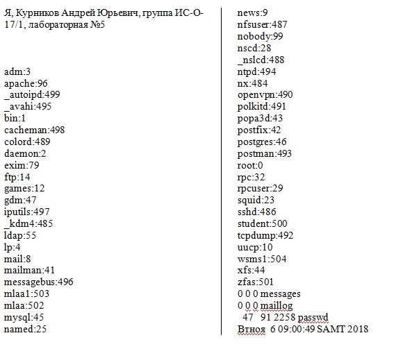
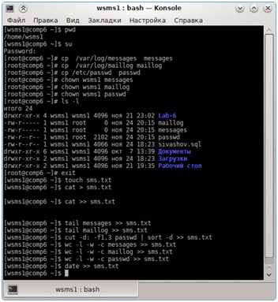

1. Открываем консоль. 2.Убеждаемся, что находимся в своём домашнем каталоге, с помощью команды:$ pwd 3.Переходим в root. 4.Выполняем команды: cp /var/log/messages messages cp /var/log/maillogmaillog cp /etc/passwdpasswd 5.Делаем скопированные файлы доступными обычному пользователю с помощью chown: chown wsms1 messages chown wsms1 maillog chown wsms1 passwd 6.Проверяем права с помощью ls: ls -l 7.Выходим из root. 8.Создаем файл с именем «sms.txt» командой: $ touch sms.txt 9.Вводим в файл следующую информацию «Я, Курников Андрей Юрьевич, группа ИС-О-17/1, лабораторная №5» с помощью команды cat. 10.Добавляем в этот файл две пустых строки. 11.Добавляем в этот файл вывод следующих команды: tail messages tail maillog 12.С помощью команды cutвыделяем из файла passwdпервое и третье поля, вывод этой команды отсортировываем по алфавиту и добавляем в созданный ранее файл sms.txt: cut –d: -f1,3 passwd | sort –d >> sms.txt 13.С помощью команды wcдобавляем в файл sms.txtколичество строк, слов и байт, содержащихся в файлах messages, maillog и passwd. 14. Добавляем в этот файл дату командой: date >> sms.txt
Файл sms.txt:

Скриншот терминала:
